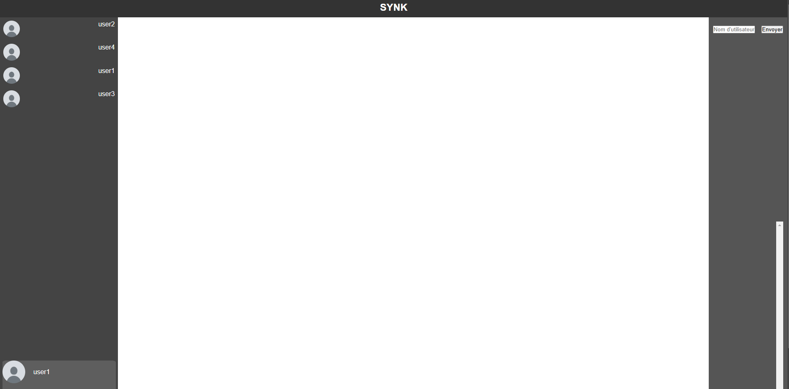

Cette page montre la facilité avec laquelle la connection avec mot de passe peut être contourné dans SYNK
D'abord, il faudra se connecter à un compte SYNK (pas nécessairement)
Il faut ensuite aller dans l'inspecteur (F12), puis dans Console.
Après il faut taper la commande suivante : sessionStorage.setItem("username", "user2") par exemple
Si vous êtes sur la page login, il faudra taper la même commande puis sessionStorage.setItem("connected", true);